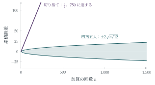

STEP II 1993、第15問
先に進む前に問題を読んでおこう。問題は STEP Support Programme の問題データベースにある： step.maths.org/questions/93-s2-q15
導入
1982年、バンクーバー証券取引所は \(1000\) から始まる新しい株価指数を導入した。株価が変化するたびに指数は再計算され、小数第3位までで切り捨て（truncation）られた。1回の切り捨てで失われる量は平均 \(0.0005\) であり、無視できるほど小さく見える。しかし再計算は1日に約 \(3000\) 回行われ、22か月後には、市場全体は上昇していたにもかかわらず、指数は約 \(520\) になっていた。正しく計算し直したところ、指数は一晩で約 \(1100\) に跳ね上がった。
この問題は、何が起きたのかを説明するものである。切り捨て誤差はすべて同じ向きを持つので、演算回数に比例して着実に積み重なっていく。一方、四捨五入（rounding）による誤差は両方の向きを持ち、大部分が打ち消し合う。その増え方は演算回数の平方根程度にすぎず、これは中心極限定理（central limit theorem、第 12.24 節）が予言するランダムウォーク（random walk）の振る舞いである。
取りかかる前に
ある数の小数部分（fractional part）\(U\) が \([0, 1)\) 上の一様分布（uniform distribution）に従うとき、その数を切り捨てたときの誤差はどうなるか。四捨五入したときはどうか。それぞれの平均（mean）と分散（variance）は何か。
切り捨ては \(a\) を \(\lfloor a\rfloor\) で置き換えるので、誤差（真の値から近似値を引いたもの）は \(U\) であり、\([0, 1)\) 上の一様分布に従う。平均は \(\frac12\)、分散は \(\frac{1}{12}\) である。四捨五入の誤差は \((-\frac12, \frac12]\) 上の一様分布に従い、平均は \(0\)、分散は \(\frac{1}{12}\) である。
順を追って解く
段階 1 誤差の総和
\(1500\) 個の数を足したあとの誤差の総和は、\(1500\) 個の独立な誤差の和であり、中心極限定理により近似的に正規分布（normal distribution）に従う。
LEP（四捨五入）：平均 \(0\)、分散 \(\frac{1500}{12} = 125\)、標準偏差（standard deviation）\(\sqrt{125} \approx 11.18\)。
VOZ（切り捨て）：平均 \(\frac{1500}{2} = 750\)、標準偏差は同じく \(11.18\)。
段階 2 大きな誤差が生じる確率
LEP について、\(E \sim \mathrm{N}(0, 125)\) のとき \(\mathrm{P}(|E| > 15)\) はいくらか。VOZ について、誤差はほぼ確実にどのあたりにあるか。
LEP については \(\frac{15}{11.18} \approx 1.342\) であるから、 \[\mathrm{P}(|E| > 15) \approx 2\bigl(1 - \Phi(1.342)\bigr) \approx 2 \times 0.090 = 0.18.\] VOZ については、誤差はおよそ \(750 \pm 11\) である。その絶対値が \(15\) 未満となる確率は実質的に \(0\) なので、\(\mathrm{P}(|E| > 15) \approx 1\) である。■
段階 3 何回足せるか
\(n\) 回の加算のあと、LEP の誤差の標準偏差は \(\sqrt{n/12}\) である。\(\mathrm{P}(|E| < 10) \geq 0.9\) となるのはどのようなときか。
\(\mathrm{P}(|Z| < 1.645) = 0.9\) であるから、\(\frac{10}{\sqrt{n/12}} \geq 1.645\) が必要である。すなわち \(\frac{n}{12} \leq \bigl(\frac{10}{1.645}\bigr)^2 \approx 36.95\) であり、\(n \leq 443\) となる。LEP は約 \(443\) 回の加算を行うことができる。■

振り返り
個々の誤差をモデル化する。 小数部分が一様分布に従うことから、各誤差は簡単な分布を持つことになった。
平均と分散を足し合わせる。 平均は足し合わされ（偏り \(\frac n2\) が生じる）、誤差が独立ならば分散も足し合わされる。
正規近似。 中心極限定理によって、\(1500\) 個の一様分布に従う誤差の和は正規分布に置き換えられた。
背後にある数学
偏りと分散
切り捨ては偏りがある（biased）。すなわち、その誤差の平均は \(0\) でなく、偏りは線形に蓄積する。四捨五入は不偏（unbiased）であり、その誤差はランダムウォークのように振る舞って \(\sqrt n\) 程度で増える。100万回の演算のあとでは、その差は \(500\,000\) 程度の誤差と \(300\) 程度の誤差の違いになる。これは、実験における系統誤差（systematic error、たとえば校正の狂った測定器）と偶然誤差（random error）の区別と同じである。多数の測定値を平均すれば偶然誤差は小さくなるが、系統誤差にはまったく効果がない。
浮動小数点
あらゆるコンピュータは実数を有限の精度で保存し、あらゆる算術演算はその結果を丸める。現代のコンピュータは IEEE 754 規格に従っており、表現可能な最も近い数に丸める。ちょうど中間の場合には最後の桁が偶数になる方へ丸めるが、これはまさに丸めが平均的に不偏となるようにするためである。それでも、多数の数を不用意に足し合わせると精度が失われることがある。カハン（William Kahan）の補償付き総和（compensated summation）アルゴリズム（1965年）は、失われた下位の桁を記録しておき、それを足し戻す。1991年の湾岸戦争では、パトリオットミサイルの砲台が飛来するミサイルの迎撃に失敗した。その時計は時間を0.1秒単位で数えていたが、0.1は2進法では正確に表せない数である。\(100\) 時間の稼働のあと、切り捨て誤差は約3分の1秒にまで増え、標的の位置を0.5キロメートル以上見誤るのに十分な大きさになっていた。
バンクーバー証券取引所の指数は、1982年1月に \(1000.000\) という値で創設された。1983年11月までに、市場全体はおおむね上昇していたにもかかわらず、指数は約 \(524\) にまで下がっていた。コンサルタントたちは、指数が1日に何千回も再計算され、そのたびに小数第3位まで（四捨五入ではなく）切り捨てられていたことを突き止めた。週末をかけて正しく計算し直した結果、指数は約 \(1098\) で取引を再開した。この出来事は、数値計算の講義で定番の戒めとなっている。
思考のスキル
符号が一定の誤差は線形に蓄積する。平均 \(0\) の独立な誤差は平方根のように蓄積する。自分が扱っている誤差がどちらの種類なのかを見極めよ。
大学では、数値解析（numerical analysis）で誤差が計算の中をどのように伝わるかを学び、統計学では偏りと分散を区別する。「バイアス–バリアンスのトレードオフ」（bias–variance trade-off）は、現代の機械学習の中心にある考え方である。
次の一歩
VOZ の補正。 VOZ が最後に答えに \(\frac n2\) を加えるとすると、その誤差はどのような分布に従うか。これで LEP と同じくらい良くなったといえるか。
小数第1位への四捨五入。 数を小数第1位に四捨五入し、捨てられる桁が一様分布に従うとき、\(10\,000\) 個の数を足したときの誤差の総和の標準偏差を求めよ。
バンクーバー指数。 指数が1日に \(3000\) 回再計算され、1回の切り捨てで平均 \(0.0005\) が失われたとすると、取引日 \(250\) 日の1年間でどれだけ失われるか。
厳密な分布。 2つの四捨五入誤差の和について、厳密な確率密度関数（三角形になる）を求めよ。3つの場合については、その概形を描け。どのくらいの速さで正規分布らしく見えてくるか。
さらに学ぶために
Nicholas Higham, Accuracy and Stability of Numerical Algorithms（SIAM）。丸め誤差に関する定評ある本であり、第1章は読みやすい。
David Goldberg, “What every computer scientist should know about floating-point arithmetic”, ACM Computing Surveys 23 (1991)。古典的な論文で、オンラインで無料で読める。
Tim Harford, How to Make the World Add Up（Bridge Street）。データにおける系統誤差を扱っている。